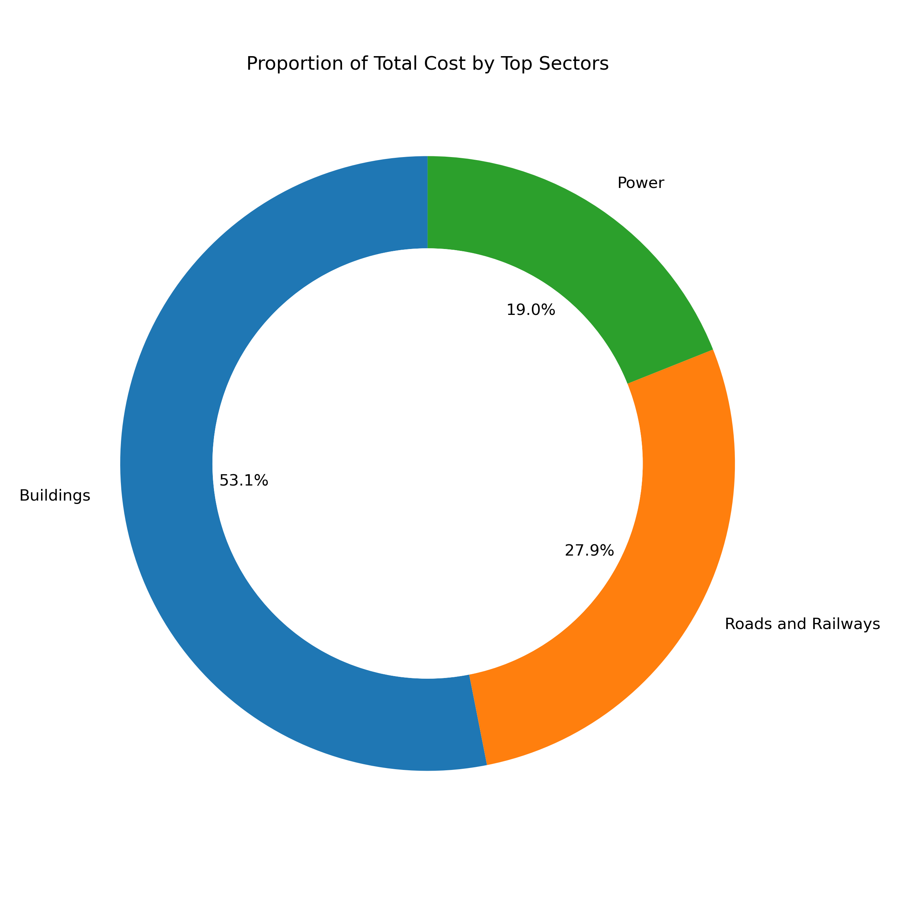
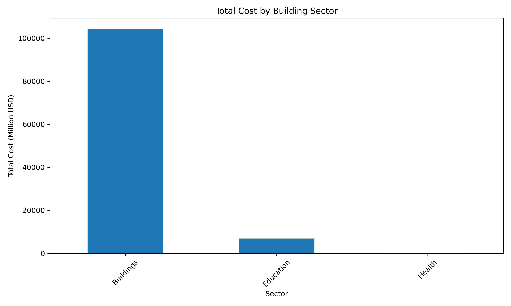
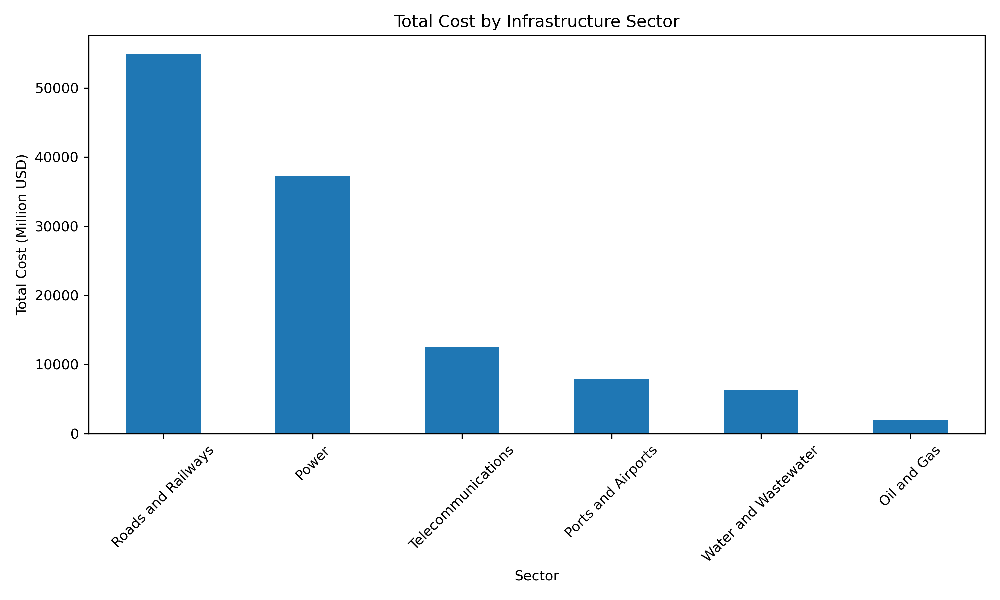

This chart highlights the distribution of economic costs across the top sectors affected by global disasters. It provides an overview of how significantly different sectors contribute to the total damage values, helping prioritise mitigation efforts where needed most.
This visualisation focuses on the total cost associated with the building sector. It breaks down the cost across related sub-sectors such as education and health, showcasing how infrastructure damage affects different societal pillars.
This bar chart demonstrates the distribution of damage costs among various infrastructure-related sectors such as roads, telecommunications, and utilities. It provides insight into which systems bear the brunt of global disaster-related economic losses.
